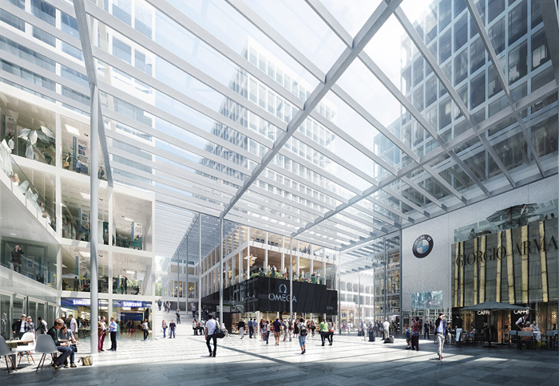
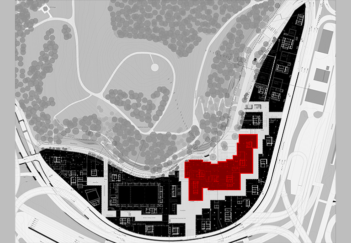
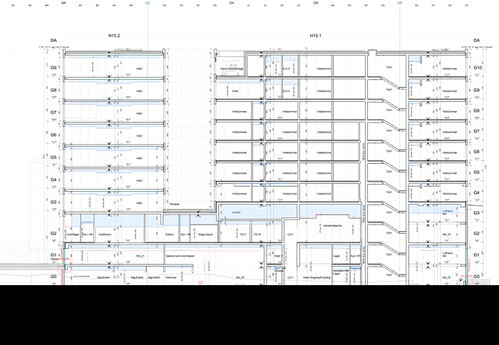
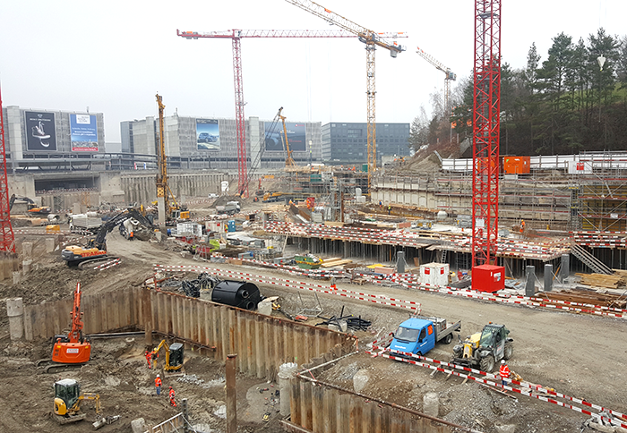

Projet: THE CIRCLE, AEROPORT DE ZÜRICH




THE CIRCLE, AEROPORT DE ZÜRICH
NYX architectes GmbH est mandaté par le bureau lausannois Richter - Dahl Rocha & Associés architectes SA pour collaborer à la réalisation d’un des bâtiments du projet “The Circle” à l’aéroport de Zürich. NYX architectes travaille à la réalisation du bâtiment H15, un édifice de 10 étages rassemblant surfaces commerciales, bureaux, bars, restaurants et un hôtel**** Superior de 256 chambres (Hyatt Regency).
L’auteur du projet et l’architecte pilote est le bureau d’architectes japonais Riken Yamamoto & Fieldshop à Yokohama.
L’entreprise responsable des travaux de construction est HRS Real Estate AG à Zürich.